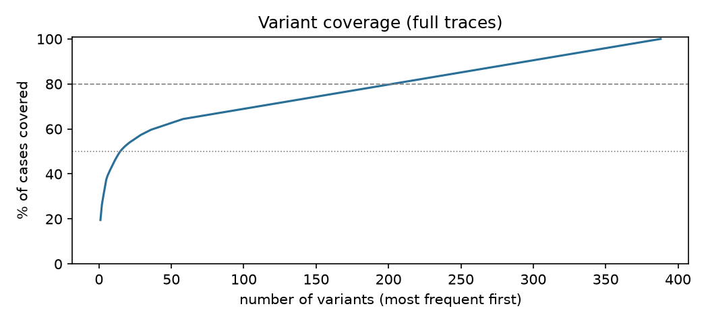
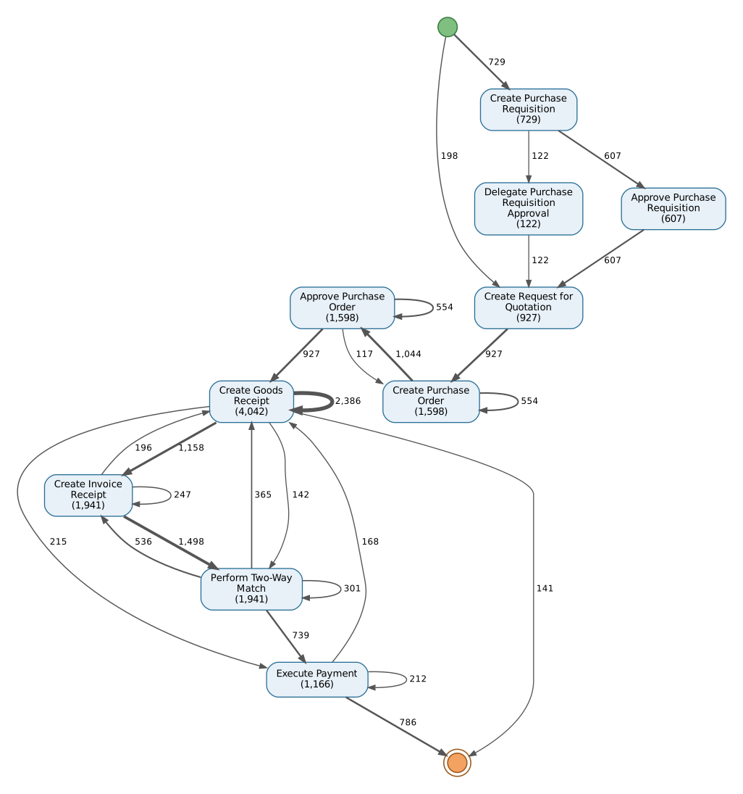
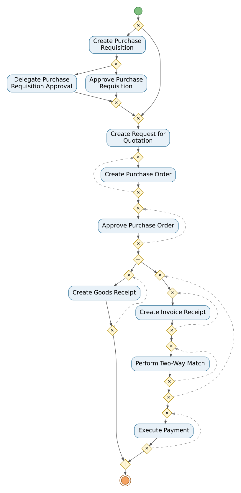
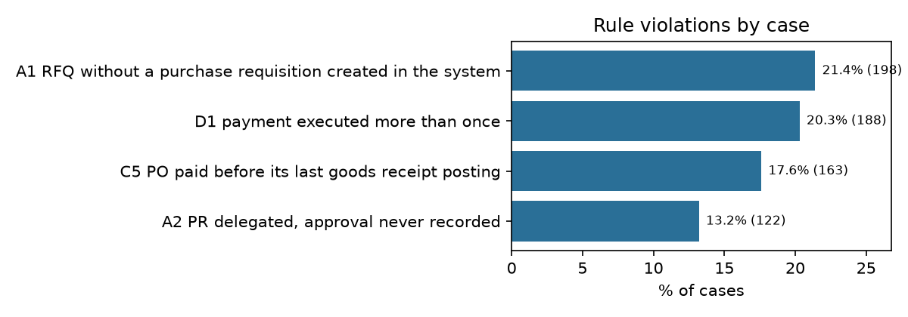
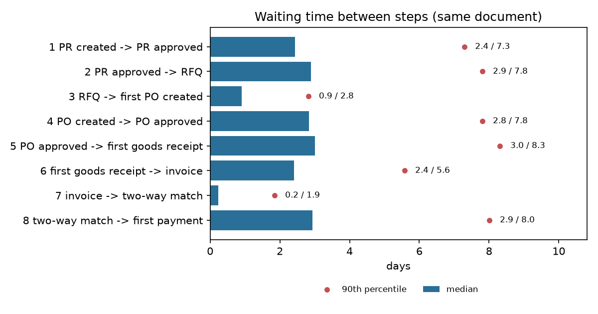
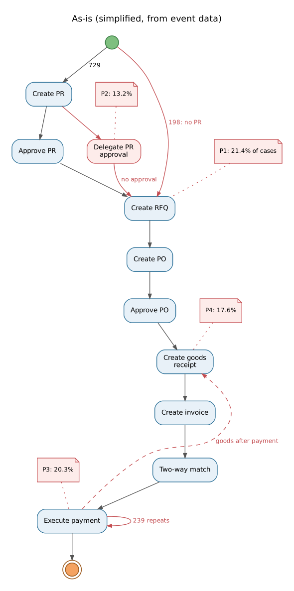
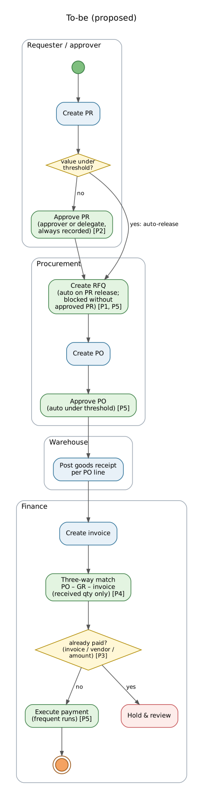

ตรวจเส้นทางของใบขอซื้อ 927 ใบ (14,671 events, 2022-04 ถึง 2024-10) ตั้งแต่ขอซื้อจนจ่ายเงิน พบว่ามีเพียง 41.7% ที่เดินตามกระบวนการที่ควรเป็นครบทุกข้อ อีก 58.3% เบี่ยงอย่างน้อย 1 จุด จุดที่เบี่ยงส่วนใหญ่เป็นเรื่องการควบคุม (control) ไม่ใช่เรื่องความเร็ว
| # | ปัญหา | เคส | ข้อเสนอแนะหลัก |
|---|---|---|---|
| P1 | ขอใบเสนอราคาโดยไม่มีใบขอซื้อในระบบ | 21.4% | บังคับให้ RFQ ต้องอ้างใบขอซื้อที่อนุมัติแล้ว |
| P2 | ส่งต่อการอนุมัติ แต่ไม่มีบันทึกการอนุมัติ | 13.2% | ผู้รับมอบต้องอนุมัติในระบบก่อนปลดล็อกใบขอซื้อ |
| P3 | สั่งจ่ายเงินซ้ำกับ invoice เดิม | 20.3% | ตรวจการจ่ายซ้ำก่อนรันจ่ายเงิน และทบทวนรายการที่พบ |
| P4 | จ่ายเงินให้ PO ก่อนรับของครบ | 17.6% | เปลี่ยนเป็น three-way match และจ่ายตามจำนวนที่รับจริง |
| P5 | เวลาส่วนใหญ่อยู่ในการส่งต่องานภายใน | ทุกเคส | อนุมัติอัตโนมัติเมื่อมูลค่าต่ำ, สร้าง RFQ อัตโนมัติ, รันจ่ายเงินถี่ขึ้น |
สิ่งที่ควรทำก่อน: P3 และ P1 เพราะเกี่ยวกับเงินที่ออกไปแล้วและการผูกพันงบโดยไม่มีการอนุมัติ ให้ทีมการเงินตรวจ 188 payment ที่ถูกสั่งจ่ายซ้ำก่อน เพื่อยืนยันว่าเป็นการจ่ายเกินจริงหรือไม่ (ข้อมูลไม่มียอดเงินรายครั้ง จึงยืนยันเองไม่ได้)
รายงานนี้ไม่ได้อ้างว่าข้อเสนอแนะจะลดต้นทุนหรือเพิ่มประสิทธิภาพได้เท่าไร เพราะยังไม่ได้นำไปใช้จริง
กระบวนการ Purchase-to-Pay (P2P) คือการจัดซื้อตั้งแต่มีคนขอซื้อจนถึงจ่ายเงินให้ผู้ขาย เป็นกระบวนการที่มีการควบคุมมาก เพราะเกี่ยวกับเงินที่ออกจากบริษัท ลำดับมาตรฐานคือ ใบขอซื้อ (PR) → อนุมัติ → ขอใบเสนอราคา (RFQ) → ใบสั่งซื้อ (PO) → อนุมัติ PO → รับของ (GR) → รับใบแจ้งหนี้ (invoice) → จับคู่เอกสาร → จ่ายเงิน
process mining ใช้ event log ที่ระบบ ERP บันทึกไว้อยู่แล้ว มาสร้างภาพกระบวนการที่เกิดขึ้นจริง แทนการถามคนว่ากระบวนการเป็นอย่างไร แล้วเทียบกับกระบวนการที่ควรเป็น
| รายการ | ค่า | รายการ | ค่า |
|---|---|---|---|
| Events | 14,671 | Activities | 10 |
| Objects (เอกสาร) | 9,543 | ประเภทเอกสาร | 7 |
| ลิงก์ event→เอกสาร | 35,927 | ช่วงเวลา (วัน) | 944 |
ข้อมูลอยู่ในรูปแบบ object-centric (OCEL 2.0) คือ event หนึ่งตัวผูกกับเอกสารได้หลายใบพร้อมกัน เช่น การจ่ายเงินหนึ่งครั้งผูกกับ payment, invoice, ใบรับของ และ PO ต่างจาก event log แบบดั้งเดิมที่ event หนึ่งตัวอยู่ในเคสเดียว
: เกินมา (เช่น purchase_requisition:622:pr_trigger_622) ต้องอ่านประเภทเอกสารจากตาราง object ไม่ใช่แยกจากรหัสต้องเลือกว่า "1 เคส" คืออะไร เลือก 1 เคส = ใบขอซื้อ 1 ใบ และเอกสารทั้งหมดที่ตามมา เพราะสายเอกสารเป็นโครงสร้างต้นไม้ที่มีใบขอซื้อเป็นราก เอกสารทุกใบสืบกลับไปหาใบขอซื้อได้ใบเดียว ผลคือ event ทั้ง 14,671 ตัวอยู่ในเคสเดียวพอดี (อยู่หลายเคส 0 ตัว, ไม่อยู่ในเคสใด 0 ตัว) ได้ 927 เคส เฉลี่ยเคสละ 15.83 events
ข้อเสียของการเลือกแบบนี้: เคสที่มีหลาย PO จะมี activity ซ้ำใน trace ซึ่งไม่ใช่การทำซ้ำจริง จึงตรวจลำดับและ rework ระดับเอกสารแยกอีกชั้น (ดูหัวข้อ 4–5)
Python 3.13, pandas และ PM4Py 2.7.23.8 แบ่งงานเป็น 5 notebook:
01_explore → 02_discovery (variants, DFG, Inductive Miner) → 03_conformance (token-based replay, alignments, กฎธุรกิจ)
→ 04_performance (เวลารอ, rework) → 05_recommendations. ทุก notebook เขียนตัวเลขลง results/*.json และรายงานนี้สร้างจากไฟล์ JSON นั้นโดยตรง
ถ้านับลำดับ activity ทุกตัว มี 388 variants จาก 927 เคส โดย 330 variants เกิดแค่เคสเดียว variant ที่พบบ่อยที่สุดครอบคลุม 19.5% ของเคส ต้องใช้ 15 variants จึงครอบคลุม 50% และ 203 variants จึงครอบคลุม 80%

แต่ variants จำนวนมากไม่ได้แปลว่ากระบวนการยุ่ง เมื่อดูเฉพาะลำดับที่ activity แต่ละตัวปรากฏครั้งแรก (skeleton) จะเหลือเส้นทางหลักแค่ 3 แบบ:
| เส้นทางหลัก | เคส |
|---|---|
| Create PR > Approve PR > Create RFQ > Create PO > Approve PO > Create GR > Create Invoice > Two-Way Match > Execute Payment | 607 |
| Create RFQ > Create PO > Approve PO > Create GR > Create Invoice > Two-Way Match > Execute Payment | 198 |
| Create PR > Delegate PR Approval > Create RFQ > Create PO > Approve PO > Create GR > Create Invoice > Two-Way Match > Execute Payment | 122 |
ความหลากหลายที่เหลือมาจากจำนวนเอกสารต่อเคส เคสที่มี PO 1 ใบและใบรับของ 1 ใบ (345 เคส) มีแค่ 11 variants ส่วนเคสที่มีหลาย PO แทบทุกเคสเป็น variant ของตัวเอง เพราะลำดับระหว่าง PO แต่ละใบสลับกันได้
จาก DFG (รูป 2 ท้ายหัวข้อนี้) เห็นสัญญาณของปัญหา 3 จุดก่อนตรวจละเอียด:
Execute Payment → Execute Payment คือการสั่งจ่ายต่อกันExecute Payment → Create Goods Receipt และมี 141 เคสที่จบด้วยการรับของ ไม่ใช่การจ่ายเงินInductive Miner (ทั้งแบบกรอง 15 variants ยอดนิยมและแบบใช้ทั้ง log ที่ noise threshold 0.2) ให้ process tree ตัวเดียวกัน โมเดลอธิบาย log ได้ดี (log fitness 0.996) แต่ precision ต่ำ (0.612) เพราะมี loop และ parallel เยอะ จึงใช้แค่อธิบายภาพรวม ไม่ได้ใช้เป็นมาตรฐานในการตรวจ


ตรวจ 2 ชั้น เพราะเคสหนึ่งมีหลายเอกสาร
| ผลระดับเคส | ค่า |
|---|---|
| เคสที่ตรงโมเดลอ้างอิง (alignment fitness = 1) | 41.7% |
| Token-replay: เคสที่ fit | 41.7% |
| Log fitness (token replay) | 0.973 |
| ค่าเฉลี่ย alignment fitness | 0.944 |
| ความเบี่ยงที่ alignment พบ | เคส |
|---|---|
| ข้าม: Approve Purchase Requisition | 320 |
| เกิน/ผิดที่: Execute Payment | 213 |
| ข้าม: Create Purchase Requisition | 198 |
| เกิน/ผิดที่: Delegate Purchase Requisition Approval | 122 |
| เกิน/ผิดที่: Create Goods Receipt | 116 |
| ข้าม: Execute Payment | 25 |
ผลการตรวจทั้ง 2 ชั้นตรงกันทุกเคส: เคสที่ alignment สมบูรณ์คือเคสที่ไม่ผิดกฎข้อใดเลย (387 เคส) และเคสที่ผิดกฎคือเคสที่ alignment ไม่สมบูรณ์ (540 เคส)
| รหัส | กฎ | เอกสาร | เคส | % เคส |
|---|---|---|---|---|
| A1 | RFQ without a purchase requisition created in the system | 198 | 198 | 21.4% |
| A2 | PR delegated, approval never recorded | 122 | 122 | 13.2% |
| A3 | RFQ created before PR approval | 0 | 0 | 0.0% |
| B1 | PO approved before it was created | 0 | 0 | 0.0% |
| B2 | goods received before PO approval | 0 | 0 | 0.0% |
| B3 | PO never approved | 0 | 0 | 0.0% |
| C1 | invoice before any goods received | 0 | 0 | 0.0% |
| C2 | match before invoice | 0 | 0 | 0.0% |
| C3 | payment before invoice matched | 0 | 0 | 0.0% |
| C4 | payment before any goods received | 0 | 0 | 0.0% |
| C5 | PO paid before its last goods receipt posting | 234 | 163 | 17.6% |
| D1 | payment executed more than once | 188 | 188 | 20.3% |

กฎที่ไม่มีการละเมิดเลยก็เป็นข้อค้นพบเช่นกัน: ไม่มี PO ที่อนุมัติก่อนสร้าง ไม่มีการรับของก่อนอนุมัติ PO ไม่มีใบแจ้งหนี้ก่อนรับของ และไม่มีการจ่ายเงินก่อนรับของครั้งแรก คำตอบของคำถาม "จ่ายเงินก่อนรับของหรือไม่" จึงเป็น "ไม่ แต่มีการจ่ายก่อนรับของครบ" (C5)
A1 · เริ่มจัดซื้อโดยไม่มีใบขอซื้อ (198 เคส). เคสเริ่มที่ Create Request for Quotation ไม่มีการสร้างหรืออนุมัติใบขอซื้อ
แต่ข้อมูลสถานะของใบขอซื้อทั้ง 198 ใบยังเป็น Released
ข้อสันนิษฐาน: ใบขอซื้อถูกปลดล็อกโดยไม่ผ่าน workflow อนุมัติ หรือเป็นการซื้อนอกขั้นตอน (maverick buying)
A2 · ส่งต่อการอนุมัติแต่ไม่มีบันทึกการอนุมัติ (122 เคส). ใบขอซื้อถูก delegate โดยเฉลี่ยไม่ถึงวันหลังสร้าง (มัธยฐาน 0.06 วัน) แล้วไปขั้น RFQ ต่อเลย โดยไม่มี event อนุมัติจากผู้รับมอบ ข้อสันนิษฐาน: ระบบไม่บันทึกการอนุมัติของผู้รับมอบ หรือการ delegate ถูกใช้เป็นทางลัดข้ามการอนุมัติ
D1 · สั่งจ่ายเงินซ้ำ (188 payment). payment เดิมถูกสั่งจ่าย 2–5 ครั้ง รวม 239 ครั้งที่เกินมา ห่างกันมัธยฐาน 2.76 วัน ทุกครั้งอ้างใบรับของชุดเดิม (188 จาก 188) และยอดของ payment เท่ากับยอดใบแจ้งหนี้ทุกใบ (100.0%) ถ้าทุกครั้งจ่ายยอดเต็ม เงินที่จ่ายเกินจะเป็น เพดานบน 25.7% ของยอดใบแจ้งหนี้ทั้งหมด แต่ข้อมูลไม่มียอดเงินของการจ่ายแต่ละครั้ง (0 แถวที่มียอด) จึงยืนยันไม่ได้ว่าเป็นการจ่ายเกินหรือจ่ายเป็นงวด
C5 · จ่ายเงินให้ PO ก่อนรับของครบ (234 PO). มีการรับของ 269 ครั้งหลังจาก PO นั้นถูกจ่ายเงินไปแล้ว (มัธยฐาน 2.07 วันหลังจ่าย)
ระบบบันทึกการจับคู่เป็น Perform Two-Way Match ทั้งหมด (1,941 ครั้ง) ไม่มี three-way match ทั้งที่ใบแจ้งหนี้ทุกใบมีใบรับของ
ข้อสันนิษฐาน: การจับคู่เทียบแค่ PO กับใบแจ้งหนี้ ไม่ได้เทียบจำนวนที่รับจริง จึงจ่ายได้ก่อนรับของครบ
ระยะเวลาทั้งเคส: มัธยฐาน 21.8 วัน, เฉลี่ย 22.5 วัน, เปอร์เซ็นไทล์ที่ 90 อยู่ที่ 32.8 วัน และนานสุด 66.0 วัน เวลารอระหว่างขั้นวัดบนเอกสารใบเดียวกันเท่านั้น เพื่อไม่ให้ปนกับเวลาระหว่างเอกสารคนละใบ
| ขั้น (เอกสารเดียวกัน) | n | มัธยฐาน (วัน) | เฉลี่ย | P90 |
|---|---|---|---|---|
| PR created -> PR approved | 607 | 2.43 | 3.37 | 7.30 |
| PR approved -> RFQ | 607 | 2.89 | 3.84 | 7.81 |
| RFQ -> first PO created | 927 | 0.90 | 1.30 | 2.82 |
| PO created -> PO approved | 1,598 | 2.83 | 3.64 | 7.81 |
| PO approved -> first goods receipt | 1,598 | 3.01 | 3.92 | 8.31 |
| first goods receipt -> invoice | 1,941 | 2.41 | 2.82 | 5.58 |
| invoice -> two-way match | 1,941 | 0.23 | 0.49 | 1.85 |
| two-way match -> first payment | 1,941 | 2.93 | 3.76 | 8.01 |

ขั้นที่รอนานที่สุดคือ PO approved -> first goods receipt (มัธยฐาน 3.01 วัน) ซึ่งเป็นช่วงรอผู้ขายส่งของ แต่ขั้นอื่นอีกหลายขั้นก็รอใกล้เคียงกันที่ 2.4–2.9 วัน เมื่อรวมค่ามัธยฐาน ขั้นที่องค์กรควบคุมได้เอง (อนุมัติ, ส่งต่องาน, การเงิน) คิดเป็น 69.3% (12.21 จาก 17.63 วัน) ผลรวมค่ามัธยฐานใช้ดูสัดส่วนคร่าวๆ เท่านั้น ไม่เท่ากับเวลาทั้งเคส เพราะเอกสารหลายใบทำคู่ขนานกัน
| กลุ่ม | เคส | มัธยฐานทั้งเคส (วัน) |
|---|---|---|
| เส้นทาง: PR approved | 607 | 23.6 |
| เส้นทาง: PR delegated, no approval | 122 | 19.8 |
| เส้นทาง: no PR created | 198 | 16.6 |
| จ่ายเงินครั้งเดียว | 739 | 21.1 |
| มีการสั่งจ่ายซ้ำ | 188 | 25.9 |
| กลุ่มจัดซื้อ 001 | 159 | 19.2 |
| กลุ่มจัดซื้อ 002 | 189 | 23.1 |
| กลุ่มจัดซื้อ 003 | 192 | 22.0 |
| กลุ่มจัดซื้อ 004 | 194 | 22.6 |
| กลุ่มจัดซื้อ 005 | 193 | 22.0 |
activity ที่เกิดซ้ำในเคสส่วนใหญ่ไม่ใช่ rework แต่เป็นเพราะเคสมีเอกสารหลายใบ เช่น เคสที่มี PO หลายใบมี Create Purchase Order หลายครั้ง
ต้องแยกโดยดูว่า activity ซ้ำบนเอกสารใบเดิมหรือไม่
| Activity | เคสที่มีซ้ำ | เพราะหลายเอกสาร | ซ้ำบนเอกสารเดิม |
|---|---|---|---|
| Create Purchase Order | 433 | 433 | 0 |
| Approve Purchase Order | 433 | 433 | 0 |
| Create Goods Receipt | 582 | 149 | 433 |
| Create Invoice Receipt | 582 | 582 | 0 |
| Perform Two-Way Match | 582 | 582 | 0 |
| Execute Payment | 188 | 0 | 188 |
Create Goods Receipt ซ้ำบนใบรับของเดียวกัน 1,241 ใบ แต่ทุกครั้ง (100.0%) อ้าง PO คนละใบ
จึงเป็นใบรับของที่รวมของจากหลาย PO ไม่ใช่ reworkExecute Payment ซ้ำบน payment เดิม (188 payment, เกินมา 239 ครั้ง) ซึ่งคือประเด็น D1| # | ปัญหาและหลักฐาน | ผลกระทบที่น่าจะเกิด | ข้อเสนอแนะ |
|---|---|---|---|
| P1 | เริ่มจัดซื้อโดยไม่มีใบขอซื้อในระบบ 198 จาก 927 เคส (21.4%) เริ่มที่ 'Create Request for Quotation' และใบขอซื้อทั้ง 198 ใบยังมีสถานะ 'Released' | ผูกพันค่าใช้จ่ายได้โดยไม่มีหลักฐานความต้องการหรือการอนุมัติงบ (maverick buying) และ audit trail ไม่ครบ | บล็อกการสร้าง RFQ ที่ไม่อ้างใบขอซื้อที่อนุมัติแล้ว และรายงานรายการที่ไม่มีใบขอซื้อให้หัวหน้าจัดซื้อทุกสัปดาห์ |
| P2 | ส่งต่อการอนุมัติ แต่ไม่มีบันทึกการอนุมัติ 122 เคส (13.2%) มี 'Delegate Purchase Requisition Approval' แต่ไม่มี event อนุมัติตามมา ทั้งที่ใบขอซื้อมีสถานะ 'Released' | ไม่มีหลักฐานว่าใครเป็นผู้อนุมัติจริง แสดงการแบ่งแยกหน้าที่ (segregation of duties) ให้ผู้ตรวจสอบไม่ได้ | ให้การ delegate ส่งงานไปที่ผู้รับมอบ และต้องมี event อนุมัติของผู้รับมอบก่อนปลดล็อกใบขอซื้อ |
| P3 | สั่งจ่ายเงินซ้ำกับใบแจ้งหนี้เดิม 188 payment (20.3% ของเคส) ถูกสั่งจ่าย 2–5 ครั้ง (เกินมา 239 ครั้ง) ทุกครั้งอ้างใบรับของชุดเดิม ห่างกันมัธยฐาน 2.76 วัน ถ้าทุกครั้งเป็นยอดเต็ม เพดานบนคือ 25.7% ของยอดใบแจ้งหนี้ | อาจจ่ายเงินซ้ำและเงินสดรั่วไหล การเงินต้องตามเรียกคืน ข้อมูลไม่มียอดเงินรายครั้ง จึงยังไม่ยืนยันความเสียหาย | เพิ่มการตรวจจ่ายซ้ำ (ใบแจ้งหนี้/ผู้ขาย/ยอดเงินเดียวกัน) ก่อนรันจ่ายเงิน และให้การเงินทบทวน 188 payment ที่พบ |
| P4 | จ่ายเงินให้ PO ก่อนรับของครบ 234 PO ใน 163 เคส (17.6%) มีการรับของ 269 ครั้งหลังจ่ายเงินแล้ว (มัธยฐาน 2.07 วันหลังจ่าย) การจับคู่ที่บันทึกเป็น two-way ทั้งหมด (1941 ครั้ง, three-way 0 ครั้ง) | เสี่ยงจ่ายเงินให้ของที่ส่งไม่ครบหรือไม่ได้ส่ง | เปลี่ยนเป็น three-way match (PO–ใบรับของ–ใบแจ้งหนี้) และจ่ายเฉพาะจำนวนที่รับจริง |
| P5 | เวลาส่วนใหญ่อยู่ในการส่งต่องานภายใน มัธยฐานทั้งเคส 21.75 วัน ไม่มีขั้นใดเด่นเป็นคอขวดเดียว ขั้นที่องค์กรควบคุมเองได้ (อนุมัติ/ส่งต่อ/การเงิน) คิดเป็น 69.3% ของผลรวมค่ามัธยฐานรายขั้น | รอบจัดซื้อถึงจ่ายเงินช้า เพราะคิวระหว่างทีม มากกว่าการรอผู้ขาย | อนุมัติอัตโนมัติเมื่อมูลค่าต่ำ, สร้าง RFQ อัตโนมัติเมื่อใบขอซื้ออนุมัติ, รันจ่ายเงินถี่ขึ้นสำหรับใบแจ้งหนี้ที่จับคู่แล้ว |
แผนภาพ as-is แบบย่อและ to-be ที่เสนออยู่ในหน้าถัดไป (รูป 6–7)


| ตัวชี้วัด | ค่าปัจจุบัน (baseline) |
|---|---|
| % เคสที่ตรงกระบวนการอ้างอิง | 41.7% |
| % เคสที่เริ่มโดยไม่มีใบขอซื้อ | 21.4% |
| % เคสที่มีการสั่งจ่ายซ้ำ | 20.3% |
| % เคสที่จ่ายก่อนรับของครบ | 17.6% |
| มัธยฐานเวลาทั้งเคส (วัน) | 21.8 |
ข้อมูล: Procure-To-Payment (P2P) Object-centric Event Log in OCEL 2.0 Standard, Zenodo record 8412920, CC BY 4.0, ไฟล์ ocel2-p2p.sqlite MD5 1a4238260019939239488b0b4befb515.
ชุดที่วางแผนไว้แต่แรกคือ BPI Challenge 2019 (4TU.ResearchData) แต่ไฟล์ปิดให้ดาวน์โหลดชั่วคราวช่วงที่ทำงาน
เครื่องมือ: PM4Py 2.7.23.8 (AGPL v3), pandas, matplotlib, Graphviz.
ทำซ้ำได้โดยรัน notebook 01–05 ตามลำดับ แล้วรัน python report/build_report.py.
ตัวเลขทุกตัวในรายงานนี้อยู่ใน results.md พร้อมชื่อ notebook ที่คำนวณ